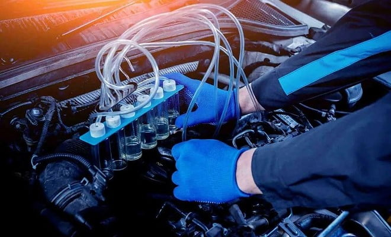
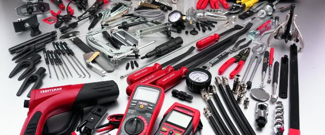

InicianteTrilha 01
Mecânica e física aplicada
Movimento, forças, energia e o raciocínio necessário para resolver problemas.
Iniciar trilha (abre em nova aba)Aprendizagem orientada
Comece pelos fundamentos, avance para o projeto e conecte o conhecimento à aplicação prática.
Trilhas recomendadas
Os conteúdos são externos, gratuitos ou de acesso aberto, e podem ser estudados no seu ritmo.

InicianteTrilha 01
Movimento, forças, energia e o raciocínio necessário para resolver problemas.
Iniciar trilha (abre em nova aba)
IntermediárioTrilha 02
Componentes, seleção de materiais e decisões fundamentais de projeto mecânico.
Iniciar trilha (abre em nova aba)Trilha 03
Funcionamento, diagnóstico e manutenção vistos pela perspectiva da engenharia.
Iniciar trilha (abre em nova aba)Método sugerido
Uma sequência simples para organizar o estudo e construir evidências do seu progresso.
Escolha uma competência específica, como compreender esforços ou modelar uma peça.
Use aulas e notas técnicas para dominar os conceitos antes de avançar.
Aplique fórmulas, compare resultados e registre as dúvidas encontradas.
Transforme o aprendizado em desenho, modelo 3D, relatório ou protótipo.
Próximo passo
Use a biblioteca para localizar referências complementares.